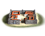
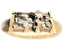

RTR: Imperium Surrectum
RTR: Imperium SurrectumCity
← settlement sizes · all settlements · wiki index
Village < Town < Large town < City < Large city < Huge city
A settlement reaches this size at a population of 9,000, and all 22 cultures that declare the figure declare the same one. It is rung 4 of 6, above Large town and below Large city.
Where these answers come from
The ladder is read from descr_sm_settlements.txt and checked against descr_cultures.txt; both files declare it, per culture, and they agree. The population figures come from each culture's settlement upgrade levels block in descr_cultures.txt, which is the only place in the mod that puts a number on a settlement size — there is no descr_settlement_mechanics.txt in RIS. What a size unlocks is read off the settlement_min field every building level carries in export_descr_buildings.txt, and units are reached through the levels that can raise them. Where the files establish nothing, the section says so with the number of things that were examined, rather than being left silently empty.
What it takes to reach it, and what holds it there
| Population | What the mod file calls it | Population | What the mod file calls it | Population | What the mod file calls it | |||
|---|---|---|---|---|---|---|---|---|
| Population needed to reach it | 9,000 | population needed to upgrade to this level | Floor | 400 | minimum population possible in this settlement | Overcrowding starts | 22,000 | maximum population before overcrowding |
| Squalour doubles | 17,000 | above this population, each extra pop counts double for squalour | Base population | 9,000 | the base population of this settlement before squalor kicks in |
Every one of the 22 cultures in descr_cultures.txt gives the same five numbers for every size, so these are the numbers for all of them.
What makes a settlement fall out of this size is not determined. descr_cultures.txt states the population needed to reach a size and the floor below which a settlement's population cannot go, and nothing in the mod files states a demotion rule. The upgrade threshold of the rung below is the obvious candidate and it is not what the file says, so it is not published here.
Which cultures can reach it
All 22 of the 22 cultures in descr_cultures.txt declare a max settlement level that reaches this size.
All 8 of the ladders in descr_sm_settlements.txt include it.
What it unlocks
Building levels first buildable here — 75
75 levels declare settlement_min city, so they are the buildings a settlement can first put up on reaching this size. Counting everything from the bottom of the ladder up to here, 204 of the 273 building levels in the mod are available at this size.
The 75 levels
Units first raisable here — 3
3 units cannot be raised in a smaller settlement — the smallest building level that lists them needs this size. Cumulatively 742 of the 743 distinct units the recruitment file names are raisable at this size.
| Unit | Raised at | Unit | Raised at | Unit | Raised at | ||||||
|---|---|---|---|---|---|---|---|---|---|---|---|
| Ballistas | Armourer (Industry) | Lithoboloi | Armourer (Industry) | Quinquiremes | Shipwright |
What it blocks — none
Nothing in the mod is withheld for a settlement being this large or larger. The size clause in exportdescr_buildings.txt is settlement_min, a field on a building level rather than a condition, and it appears 273 times with 0 of them negated — a field cannot be. There is no settlement_max_level in the file (0 occurrences) and no settlement_min_level either (0), and 0 requires expressions in the whole file mention a settlement size at all._
At the campaign start
89 of the 1,305 settlements the campaign file places begin at this size — 6.8% of them. 31 of those are a faction's capital.
Who holds them (38 factions)
| Faction | Culture | Settlements | Faction | Culture | Settlements | Faction | Culture | Settlements | Faction | Culture | Settlements |
|---|---|---|---|---|---|---|---|---|---|---|---|
| Ptolemaic Empire | e_hellenistic | 16 | Seleucid Empire | e_hellenistic | 16 | Free Peoples | libyan | 9 | Antigonid Kingdom | w_hellenistic | 6 |
| Carthage | carthaginian | 4 | Bactria | e_hellenistic | 3 | Maurya Empire | indian | 3 | Indians | indian | 2 |
| Acragas | greek | 1 | Arados | carthaginian | 1 | Argos | greek | 1 | Arverni | barbarian | 1 |
| Asta | iberian | 1 | Bosporans | w_hellenistic | 1 | Buri | dacian | 1 | Capua | roman | 1 |
| Carmo | iberian | 1 | Cisalpine Boii | barbarian | 1 | Cyrene | e_hellenistic | 1 | Cyzicus | greek | 1 |
| Gades | carthaginian | 1 | Heraclea Pontica | greek | 1 | Insubres | barbarian | 1 | Kush | ethiopian | 1 |
| Massalia | greek | 1 | Megalopolis | greek | 1 | Oretani | iberian | 1 | Osismii | barbarian | 1 |
| Pergamon | w_hellenistic | 1 | Persis | iranian | 1 | Pontic Pentapolis | greek | 1 | Saba | arab | 1 |
| Senones | barbarian | 1 | Sidon | carthaginian | 1 | Sinope | greek | 1 | Taras | greek | 1 |
| Tyre | carthaginian | 1 | Volcae (Gaul) | barbarian | 1 |
Every settlement that begins at this size (89)
The mod's picture of it

Declared for barbarian, brittonic, celtiberian, dacian, germanic in descr_cultures.txt and descr_sm_settlements.txt, as data/ui/barbarian/cities/barbarian_city.tga.

Declared for scythian in descr_cultures.txt and descr_sm_settlements.txt, as data/ui/scythian/cities/nomad_city.tga. The same file is the mod's picture for Large city and Huge city as well, so it is not art of its own.

Declared for roman in descr_cultures.txt, as data/ui/roman/cities/roman_city.tga.
Declared for anatolian, e_hellenistic, greek, illyrian, thracian, w_hellenistic in descr_cultures.txt, as data/ui/greek/cities/greek_city.tga.

Declared for carthaginian, iberian, libyan in descr_cultures.txt, as data/ui/carthaginian/cities/carthaginian_city.tga.
Declared for egyptian, ethiopian in descr_cultures.txt, as data/ui/egyptian/cities/egyptian_city.tga.

Declared for arab, eastern, indian, iranian in descr_cultures.txt, as data/ui/eastern/cities/eastern_city.tga.
The other 6 pictures declared for this size — 6 cultures — point at files the mod folder does not contain.